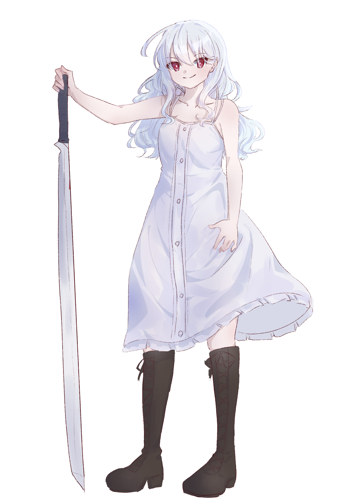
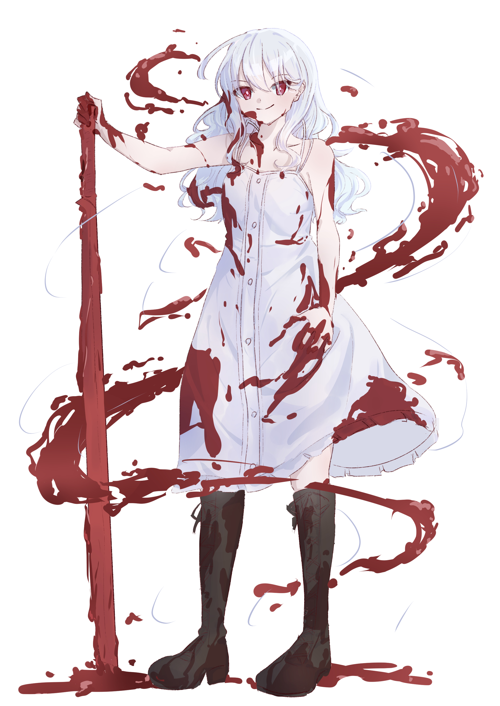

解説編ではＳＳ中に登場したキャラクターやＣＨＡＲＭ、その他設定などに関する情報を紹介していきます。 今回はG.E.H.E.N.A.千代ラボに保護されている少女、白雪緋辻󠄀を紹介します。
【血塗れの眠り姫】 白雪 緋辻󠄀
{kind=link}
{kind=link}
{kind=link}
「神の鍵」へと至る研究の果て
幼少期から身寄りがなく、とあるG.H.E.N.A.の研究施設でブーステッドスキル「アルケミートレース」の被験体の中の１体として扱われてきました。
アルケミートレースは使用者の血を触媒として疑似ＣＨＡＲＭを形成するため、通常の研究ならば「リジェネレーター」と併せた施術を行い、
流血と回復の繰り返しを強制します。
しかし施設で実験されていたのは、体外に出た血液でなく、使用者体内での血流自体をＣＨＡＲＭ化とするという異質なものでした。
「神の鍵」とも呼ばれるＣＨＡＲＭをヒトの身に宿すことでマギクリスタルフォースの源に至ろうとするのが彼らの研究目的であり、
その唯一かつ最後の成功例が緋辻󠄀です。
体内でのアルケミートレースを目標としている以上、リジェネレーターの施術は彼らにとって理論上不要であり、
研究成果の論拠を邪魔するものでしかありませんでした。
小規模な私的研究施設であったため、リジェネレーター施術に割ける予算がなかったという内情もあります。
そのため緋辻󠄀の持つブーステッドスキルは今もアルケミートレースのみです。
また、実験において失敗はつきものです。
硬化形成された疑似ＣＨＡＲＭが被験体を体内から突き破ることは施設内では日常であり、
緋辻󠄀の中の死生観はこの過程で既に破綻しています。
施設にはただ一人、レアスキル「Ｚ」を扱うことができる強化リリィが確保されており、彼女が直せる範囲であれば被験体にも修復処置が施されていました。
緋辻󠄀は運よく適性が高かったため、実験ごとの損傷はそのＺ持ちが修復を担っていました。
緋辻󠄀にとっては施設内で唯一「交友」と呼べる存在でもありました。
そんな彼女も経年劣化に伴うマギの低下と、研究が完成を目前としたという理由から廃棄処分が下されています。
緋辻󠄀への施術が結実する数日前の出来事でした。
そして研究の成功と同時に、施設は崩壊を迎えます。
繰り返される実験の失敗、痛みとともに身体を突き破ってくるＣＨＡＲＭの刃、狂った死生観。
「――いまだったら、こいつら全部殺せる」
復讐心など微塵もなく、ただその手と目の前に条件が揃っていただけ。
それだけの理由で緋辻󠄀は周囲に集まり歓喜に沸く研究員をその場で皆殺しにしました。
G.H.E.N.A.内部で「リサーチ・クラッシャー」と呼ばれる千代ラボが介入を開始する数時間前の出来事でした。
千代ラボの介入
自称「G.H.E.N.A.最高級顧問」千代御代（せんだい みよ）が統括するG.H.E.N.A.千代御代特別研究所（通称：千代ラボ）は
G.H.E.N.A.が「千代御代を組織外に出さない」ためのご機嫌取りの一貫として与えている特権の一つであり、
外部研究施設で行なわれているすべての研究への越権行為が唯一黙認されている部署です。
「本物の」魔術師でありながら、物理学、情報科学に傾向し、マギクリスタルコア開発にも初期段階からメイカーズたちに口出しを続け、
完成した研究成果を軽々と踏みつぶしていく千代御代という存在は、組織内に抱えるにあたって脅威であると同時に、
より完成度の高い成果を生み出す金の卵でもあり、組織外に出すだけでG.H.E.N.A.の存在意義を失わせてしまう爆弾的存在と言えます。
そんな御代の趣味は研究論争と、可愛い女の子を愛でること。
そのため少女たちを対象とした非人道的研究は、後者の理由からことごとく千代ラボからの介入を受けるため、
研究の存続は彼女の目を何とかかいくぐり続けるか、彼女に気に入られるほど折られても何度も立ち上がる不屈が必要と言われています。
後者の代表として、何度論破、解体されようとも咬みつき返し、
持論を曲げないルド女ラボのとある研究員が、御代にとってはつぶしたくてたまらないくらいお気に入りの存在でした。
緋辻󠄀のいた施設は小規模かつ私的な研究でもあったため、御代のセンサーに中々引っかかりませんでしたが、
ひとりの強化リリィの死によって御代の逆鱗に触れます。
ただちにアルケミートレース研究の限界に関する空論がプレプリントされ、
マギクリスタルコアのブラックボックス一部解体及びそれを用いたエビデンスと再現性の高い実証実験の一部始終が
リアルタイムで動画配信サイト上に公開されました。
数年をかけて築きあげられた研究も、たった数日のうちにその根本をつぶすための全条件がクリアされたのです。
そして御代の懐刀である棗・Ｋ・曾根崎（なつめ・けい・そねざき）に施設への武力制圧指示が出されます。
ただし、彼女が到着したとき、施設の中でかろうじて息のあったのは、瀕死状態の緋辻󠄀のみでしたが……。
千代ラボでの日々
失血に伴う瀕死状態の緋辻󠄀でしたが、棗に帯同していた斧鉈成（おのなた なる）の手で一命をとりとめます。
成は千代ラボに保護された少女たちのカウンセラー的な役割を担っていますが、
元はイルマ女子のG.H.E.N.A.ラボに在籍し外科手術で名を馳せていました。
被験体の頃はＩＤでのみ管理されていた少女に、白くてふわふわしてるからという理由で「白雪緋辻󠄀」という名を与えたのも成です。
成自身、この名づけを気に入っており、読み書きができなかった緋辻󠄀に教材として白雪姫の童話を与えるなどしています。
体内を巡る血流自体のＣＨＡＲＭ化、つまり自身が半ＣＨＡＲＭ化している緋辻󠄀はリリィと共鳴しやすく、
特に自身と似た境遇の実験を受けている少女たちからの救難信号を受信するという後遺症を抱えています。
この際の救難信号は悲痛の叫びと同時に尋常でない脳への負荷を緋辻󠄀に与えます。
本人曰く、「頭ン中でフルボリュームの爆音で喚き散らされてる」。
この仕組みはすでに緋辻󠄀の体内で完成されてしまっており、除去には強制的な施術治療を行う必要があります。
そういった反自然的治療は緋辻󠄀にかける負担をさらに大きなものとし、
御代にとっても「わたしが一番嫌いなやり方」であるため、
自然界のマギを媒介とした長期療法と、ラボ周囲に結界を構築することで対処にあたっています。
ただしそれを突き抜けて来る強度の高い緊急信号も多く、
「耐えるくらいなら、殴りこんで止めた方が早い」と言っては勝手に飛び出していくのが日常化しており、
そのたびに成が億劫そうに緋辻󠄀を救出に向かうのはストーリーの通り。
「保護」という扱いですが、千代ラボに「保護」されている元被験体の少女たちには、
「居たくなくなったらいつでも出て行っていいし、帰ってきてもいいし、助けが必要ならいつだって助けに行く」
と御代が約束しており、緋辻󠄀が飛び出すのも「やんちゃｗ」の一言ですまされています。
ただし「殺すな」「死ぬな」。この２つが絶対の約束事として指示されており、緋辻󠄀の現在の死生観の柱になっています。
最初のころは現在以上に深手を負って戻って来ることが多かったため、見かねた棗が戦闘指南と共に自らが打った中でも特に頑丈な刀を授けました。
緋辻󠄀はそれに「なぐり丸」という名をつけ、「ヤレるなら、武器なんてなんでもいい」と刃こぼれしボロボロになった状態でも使い続けています。
被験体時代に抑え込んでいた反動か、新たに与えられた死生観も相まり、勝手気まま高圧的性格。
棗の指南を柔軟に吸収しており、リリィを含む対人戦闘ならば相手が何人であろうと、ガーデンの高等部生さえ平気で相手取ります。
反面、リジェネレーター持ちでもないアルケミートレースを使った戦闘ゆえ、戦いのたびの負傷が大きく、
生活のほとんどをベッドの上でおくっており、ラボ内では「眠り姫」と呼ばれ、皆からひっそりお姫様扱いで可愛がられています。
また治療を含め生活のほとんどを成に依存しきっていますが、それを「懐いている」というと無言で目を細めて殴ってきます。
口汚いのは被験体時代の研究者たちの口調しか知らなかったためで、成の影響で少しずつ軟化してきてはいますが、本人は無自覚です。
戦闘スタイル
棗から与えられた刀「なぐり丸」（命名はトールキンに由来）を使った近接戦を主体としますが、棗自身の戦い方が「臨機応変」のため、
その場に使えるものがあれば躊躇なくなんでも武器にします。
アルケミートレースは出血レベルの負傷を受けてから使い出し、血液を刀に纏わせそのリーチを伸ばすことをベースに、
約束の領域との併用で周囲に飛び散った血液を刃物や棘、トラバサミに変化させるなど、
戦いの中でも枠組みに捉われるのを嫌う何でもありな立ち回りをします。
普段からベッド生活のため持久力はなく、戦えても１時間が限界です。
ただし、ひ弱なわけではなく、戦うにあたって必要限の膂力は常に鍛えているため、アドレナリン任せの無差別格闘術もよく使います。
また緋辻󠄀が強襲した道筋には必ず彼女の血が残っており、
百合ヶ丘のＬＧロスヴァイセとは目標が被ることも多く、緋辻󠄀に先を越されることもしばしあるため、
北河原伊紀などからは対象名「血塗れのメアリ」と苦々しく呼ばれています。
そして緋辻󠄀もそれを承知で、去り際にワザと血文字で挑発の言葉を残したりしています。
近隣ガーデンからは未確認の強化「リリィ」と目されていますが、緋辻󠄀はアルケミートレース以外でのＣＨＡＲＭ使用経験がなく、
被験体時代にもＣＨＡＲＭに触れたことがありません。
あくまで強化「人間」止まり。
本人も「学校とか興味ない」とのことなのでリリィになる意思もなく、
今後も千代ラボで養ってもらいつつ、ベッドの上でゴロゴロ日がな一日読書三昧で一生を終えるのが緋辻󠄀の夢です。
{kind=link}
{kind=link}

じろぴさんがイラスト化してくれた緋辻󠄀。
ほんとならドールで再現させたかったふんわりとした髪質が再現されており、
とてもかわいい。
大事な事なので、
とてもかわいい。
うちの子かわいい。
{kind=link}

アルケミートレース使用バージョン。
出血を纏った「なぐり丸」のどちゃっと感に、「約束の領域」で操作され宙を舞う血液が好みすぎる。
{kind=link}